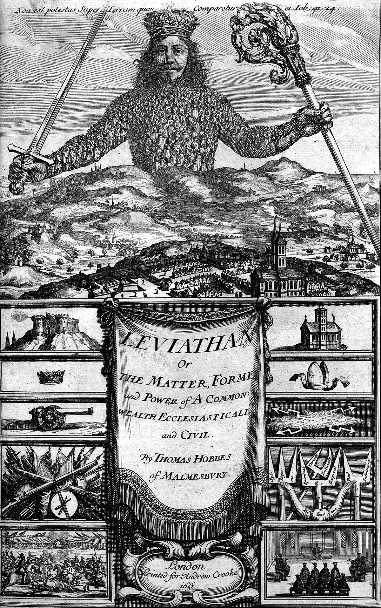

Intellectual Freedom

- What kind of "freedom" do we mean?
- Is freedom something that belongs to an individual?
- Is intellectual activity something that an individual does? Or is it social?If freedom belongs to an individual, where does society fit in?
- How does intellectual freedom fit within our conception of rights (Charter of Rights, First Amendment)?
- Why does Intellectual Freedom tend to take precedence over other library values?
- Are there better ways of thinking about "the intellect" and "freedom" than the default ones?

Liberalism
- Individualism (social contract theory)
- Ability to own property
- Ability to enter into contracts
- Ability to direct their own lives
- What kind of person are we talking about?
- Liberalism as the ideology of capitalism
"1968" & Neoliberalism

Image credit: Bettman archive
- Civil Rights, Women's Rights, Gay Rights
- Anti-colonial struggle (Algeria, Vietnam)
- Civil Disobedience (Kent State, 1970)
- The counterculture (Beatles, San Francisco, Timothy Leary
- 1967: Office of Intellectual Freedom
- 1969: Social Responsibilities Round Table
- What was going on?
Alternative Perspectives
- Social
- Non-individualistic
- Materialist
- Oriented towards Social Justice
- Anti-racist, anti-capitalist
@redlibrarian